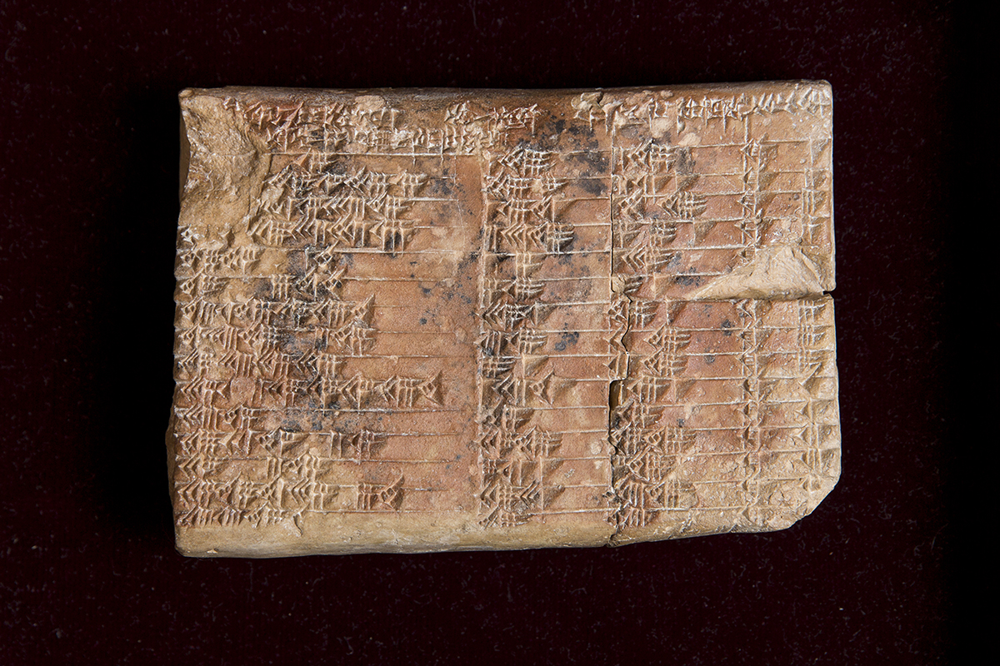
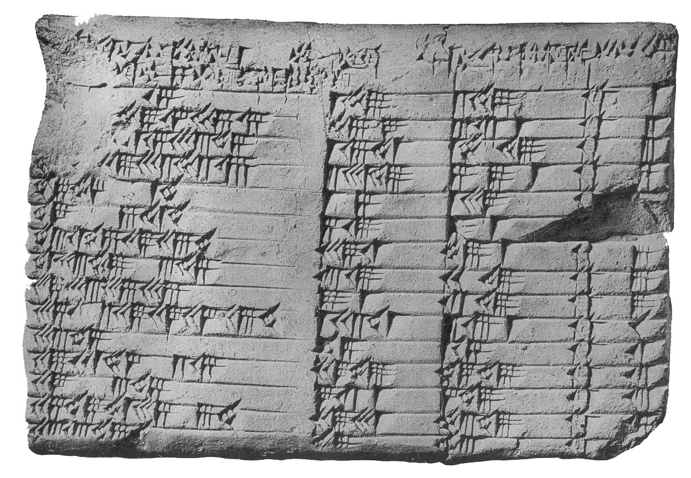
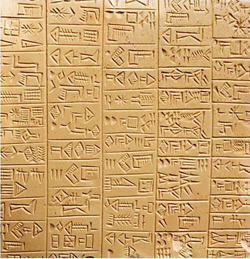
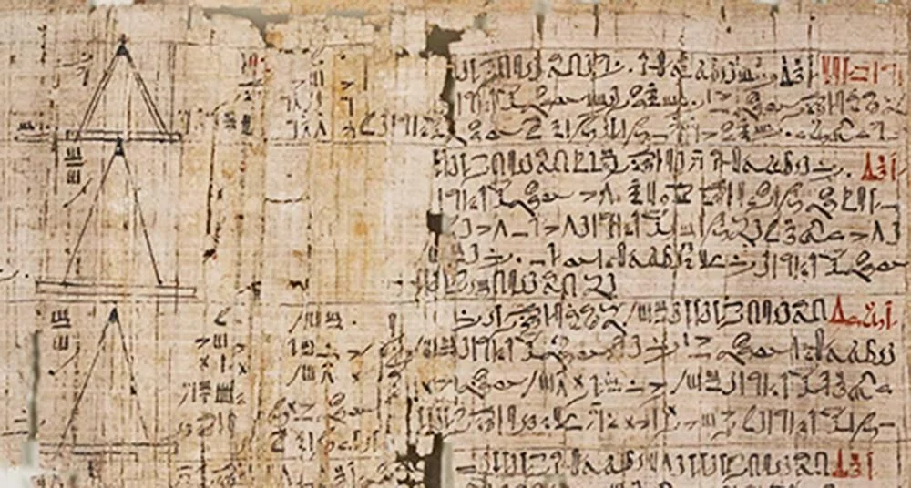

c. 2000–1600 BCE
Babylonian Base-60 System
Babylonians used a sexagesimal place-value system, which influenced timekeeping, angles, and later mathematical notation.
A visual journey through the development of mathematics, from Ancient Egypt and Babylon to the twentieth century. This timeline highlights major mathematicians, important mathematical ideas, and a few historical events that shaped the world around them.
This website was programmed by Sydney Tran as a part of the History of Mathematics project. I used HTML and CSS!
Early mathematics focused on numeration, geometry, fractions, and equation-solving for practical problems.

Babylonians used a sexagesimal place-value system, which influenced timekeeping, angles, and later mathematical notation.

A Babylonian clay tablet listing numerical triples related to right triangles, often compared to ideas later associated with the Pythagorean theorem.

Babylonians solved quadratic problems using geometric procedures and numerical methods that resemble early algebra.

An Egyptian document containing arithmetic, fractions, area formulas, and practical geometry problems.
Egyptian fractions expressed values as sums of distinct unit fractions, shaping their calculation methods.
Greek thinkers emphasized proof, abstraction, and logical structure, changing mathematics permanently.
Introduced deductive reasoning into mathematics and is often credited with early geometric theorems.
Associated with the theorem on right triangles and with the idea that number underlies harmony and structure.
Known for paradoxes that challenged ideas of motion, infinity, and divisibility.
Worked on geometry and helped organize early mathematical propositions.
Developed the method of exhaustion, a key precursor to integral reasoning.
323 BCE — Death of Alexander the Great. After his death, the Hellenistic world spread Greek culture and learning across many regions.
Wrote Elements, one of the most influential mathematical texts ever created.
Studied area, volume, levers, and approximation methods, making major advances in geometry and physics.
This period connected geometry, astronomy, and early symbolic methods.
Often called a founder of trigonometry for linking astronomy and geometric measurement.
Advanced astronomical calculation and used trigonometric ideas in planetary models.
Known for work in number theory and algebraic problems, especially equations with unknowns.
Collected and preserved major results of Greek geometry and mathematical commentary.
476 CE — Fall of the Western Roman Empire. This is often used to mark the transition from the ancient world into the Middle Ages in Europe.
Indian mathematicians advanced place value, zero, arithmetic, algebra, and trigonometry.
Used place-value thinking and made important advances in arithmetic and astronomy.
Developed rules for zero and negative numbers and wrote on algebraic operations.
c. 700 CE — Rise of the Islamic Caliphates. Expanding Islamic centers of learning helped preserve and transmit Greek and Indian mathematical knowledge.
Expanded work in algebra, arithmetic, and astronomy and discussed sophisticated mathematical ideas.
Scholars translated earlier works, developed algebra, and expanded astronomy, optics, and geometry.
Wrote foundational algebraic works and helped spread the Hindu-Arabic numeral system.
Made major contributions to geometry, optics, and mathematical reasoning.
Classified cubic equations and solved some geometrically, contributing to algebraic development.
1096–1099 — First Crusade. Contact between European and Islamic societies increased through conflict and exchange.
Europe absorbed and adapted mathematical knowledge from Arabic and classical sources.
Published Liber Abaci, helping introduce Hindu-Arabic numerals and arithmetic methods to Europe.
Merchants and scholars gradually adopted the new number system because it improved calculation and recordkeeping.
1492 — Columbus reaches the Americas. New trade routes and global contact reshaped the world that later mathematics would develop within.
European algebra became more systematic, especially in solving polynomial equations.
Discovered methods for solving certain cubic equations and advanced algebraic problem solving.
Published general solutions to cubic and quartic equations in Ars Magna.
1517 — Protestant Reformation. Major religious and intellectual changes transformed Europe during the same period.
Developed a method for solving quartic equations, extending Renaissance algebra further.
Symbolic notation and new methods made mathematics more general, powerful, and easier to communicate.
Introduced systematic symbolic algebra using letters for knowns and unknowns.
Invented logarithms, simplifying complex calculations in astronomy and science.
Developed analytic geometry, connecting algebra with geometry through coordinates.
Made major contributions to number theory, geometry, and early ideas related to calculus.
Worked on probability, geometry, and mathematical devices, influencing later developments.
1642–1651 — English Civil War. Political conflict in England changed government power during a period of major scientific change.
Their exchange of letters helped launch the formal study of probability.
Calculus transformed the study of motion, change, curves, and accumulation.
Developed calculus alongside his work in mechanics, gravity, and physics.
Independently developed calculus and introduced notation that is still widely used.
Mathematics became increasingly analytical, formal, and connected to mechanics and astronomy.
Made enormous contributions to analysis, number theory, notation, mechanics, and graph theory.
Advanced calculus of variations, mechanics, and algebraic methods.
Worked on celestial mechanics, probability, and mathematical physics.
1775–1783 — American Revolution. Political revolution reshaped the Atlantic world during the age of Enlightenment thought.
This era expanded rigor, abstraction, algebraic structure, geometry, and the foundations of logic.
Reshaped number theory, astronomy, statistics, and geometry with lasting depth and precision.
1789–1799 — French Revolution. A major political upheaval that promoted ideas of equality, citizenship, and democracy.
Developed non-Euclidean geometry, showing that Euclid's parallel postulate was not the only possible framework.
Independently helped develop non-Euclidean geometry.
Founded group theory and connected algebraic structure to the solvability of equations.
Introduced quaternions and contributed to algebra, mechanics, and geometry.
Created Boolean algebra, laying foundations for symbolic logic and later computer science.
Developed Riemannian geometry and transformed analysis and differential geometry.
Founded set theory and developed the mathematics of infinity.
Modern mathematics confronted logic, foundations, computability, and the limits of formal systems.
Presented Hilbert's Problems in 1900, shaping the direction of twentieth-century mathematical research.
Proved the incompleteness theorems, showing limits to what formal systems can prove.
Created fundamental ideas of computability and the Turing machine, helping lay the groundwork for computer science.
1914–1918 — World War I. A global war involving major powers that changed politics, culture, and the modern world.
Introduced the concept of a theoretical machine capable of performing any computation, forming the foundation of modern computer science and algorithms.